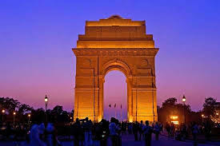
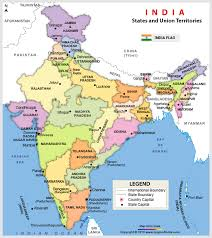

I am Indian, and I am proud to call myself that. I was born in India, I lived in India for a short time, and I've visited India multiple times. India has a very special place in my heart, and I love the atmosphere which is present in this country.
 The first time I was in India was in 2004, when I was born in Chennai. Then, we moved to Delhi to my grandparents's house. I lived there for 6 months, and then went to Tokyo, not to return for 3 more years.
I was 3 years old when we visited India next, when my sister was born. I don't really remember anything from this trip, and jus remember touring Delhi and Chennai, learning the Hindi language and finding my kindred spirit with the billion who live in this wonderful nation.
The last time I have been to India was when I was 7. I went with my father, and we visited the Taj Mahal during this trip. This journey was much more memorable, and I loved the experience of viewing elegance and beauty up close and personal. This experience left such a lasting effect on my that I recently put my pen to paper, writing a narrative about me experience there. You can read it here.
And although I love the United States as my adopted country, India will always have a special place in my heart.